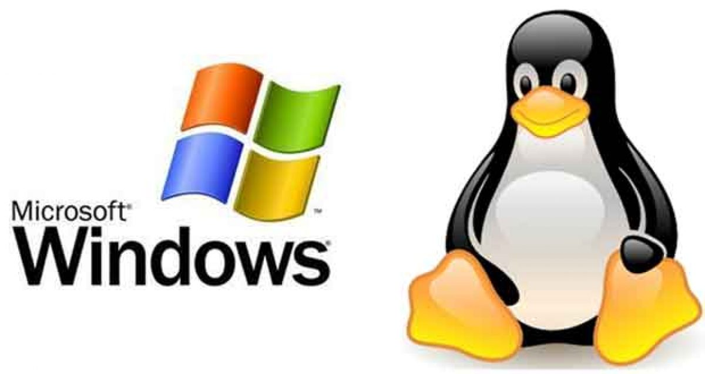
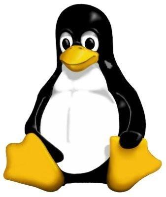
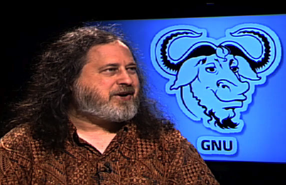
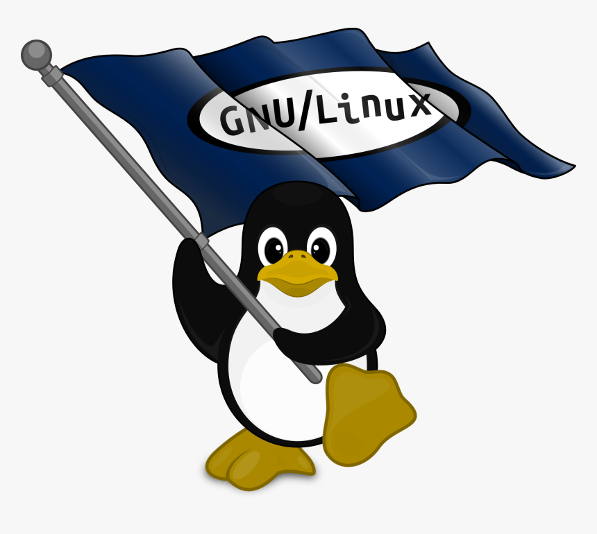
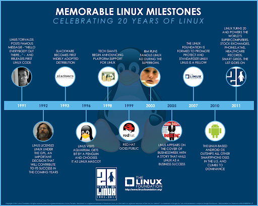

Dans le monde de la micro-informatique,Microsoft domine avec Windows le marché des systèmes d’exploitation depuis toujours ou presque pour ainsi dire.Cependant,si on prend en compte la totalité des ordinateurs de la planète,en incluant les serveurs,les super calculateurs,les nano-ordinateurs et tout le reste du bestiaire animant cet écosystème,cette statistique est loin d’être aussi évidente et tranchée,même si il est très difficile d’avoir des chiffres précis.Parmi les systèmes alternatifs à Windows,il y en a,basés sur Linux,qui sont utilisés massivement pour faire fonctionner des serveurs informatiques,entre autres.

Linux est un système d'exploitation complet et libre, qui peut être utilisé en lieu et place de systèmes d'exploitation commercialisés,tels que Windows,de Microsoft.Il est accompagné de nombreux logiciels libres complémentaires,offrant un système complet aux utilisateurs.Le système peut être utilisé sur des serveurs(LAN ou serveurs web),sur des PC ou encore sur des smartphones.

HISTORIQUE
Richard Stallman,créateur du projet GNU et fondateur du mouvement du logiciel libre.Le 27 septembre 1983,Richard Stallman annonce sur Usenet son projet de développer un système d'exploitation compatible UNIX appelé GNU2,en invitant la communauté hacker à le rejoindre et participer à son développement.Dès 1985,certaines pièces maîtresses sont déjà opérationnelles:le compilateur GCC finalisé dès juin 1984,une version emacs compatible UNIX,etc.

Au début des années 1990,le projet GNU possède ou a accès à une version utilisable de tous les éléments nécessaires à la construction d’un système d’exploitation à l’exception du plus central:le noyau.Le projet GNU initie alors en 1990 le projet de production d'un noyau nommé Hurd.Cependant,Hurd ne dépassera jamais réellement le stade de curiosité de laboratoire de recherche,et en 1991,GNU n'est toujours pas complètement opérationnel à cause de ce manque.

En 1991,l’étudiant finlandais Linus Torvalds,indisposé par la faible disponibilité du serveur informatique UNIX de l’université d'Helsinki, entreprend le développement d’un noyau de système d'exploitation,qui prendra le nom de «noyau Linux».Le 25 août 1991,il annonce sur le forum Usenet news:comp.os.minix[archive]le développement du noyau Linux4.Linus Torvalds choisit rapidement de publier son noyau sous licence GNU GPL.Cette décision rend compatibles juridiquement les systèmes GNU et Linux.Dès lors,pour combler le vide causé par le développement inachevé de Hurd,GNU et le noyau Linux sont associés pour former un nouveau système d'exploitation(parfois considéré comme variante de GNU):GNU/Linux ou Linux.
À l'origine,l'installation d'un système opérationnel GNU/Linux nécessitait des connaissances solides en informatique et obligeait à trouver et installer les logiciels un à un.Rapidement,des ensembles de logiciels formant un système complet prêt à l'usage ont été disponibles.On peut citer:
* deux disquettes 5,25 pouces boot et root créées par HJ Lu,et contenant un minimum de logiciels.
* MCC Interim Linux,collection de disquettes sortie en février 1992.
Dans la prise en compte progressive de l’intérêt commercial de GNU/Linux,on peut citer quelques manifestations:
* le lancement en février 1998 de l’Open Source Initiative.
* l’annonce en juillet 1998 du support d’Oracle Corporation,qui porte et supporte sa célèbre base de données sous GNU/Linux.
Le support massif apporté par le géant IBM,qui y dépense son premier milliard de dollars en 2006,emploie en 2005 près de trois-cents développeurs du noyau Linux,et organise à partir de 2003 la riposte légale lors de l’attaque du SCO Group qui affirmait posséder des droits d’auteurs sur le noyau Linux(voir l’article SCO contre Linux).L’acquisition en octobre et novembre 2003 de Ximian puis de SUSE par l’entreprise américaine Novell7.

AUTRES INFORMATIONS
Linux est un système:
* Puissant:Il permet de faire faire beaucoup de choses à sa machine.
* Efficace:Contrairement à des systèmes beaucoup plus répandus,il n'utilise pour ses besoins propres que très peu de ressources.Les logiciels que vous utilisez pour votre travail disposent donc de beaucoup plus de puissance pour fonctionner.
* Fiable:Une machine sous Linux fonctionne 24h/24 si besoin sans se plaindre(si le matériel est prévu pour,en particulier au niveau thermique).
* Robuste:Une erreur d'un utilisateur ou un`plantage'éventuel d'une application n'affectent pas le reste du système.D'autre part,il est exceptionnel de devoir l'arrêter:la quasi-totalité des opérations de configuration,mise au point,etc,ne nécessitent pas l'arrêt du système.
* Très bon marché:Le prix demandé par les sociétés qui vendent Linux sur CDROM ne sert qu'à couvrir leurs frais et à leur permettre de financer dans une certaine mesure la poursuite de cette activité.Linux étant développé par des passionnés pour le plaisir,personne n'a à supporter le coût de son développement.
* Enfin,Linux est conforme à la norme POSIX et aux standards du marché,en particulier de l'Internet.Cela signifie que qu'un logiciel conçu pour un autre système de la même famille(Solaris de SUN, Digital Unix,AIX d'IBM,SCO Unix...) peut être rapidement porté sous Linux et vice-versa,ce qui assure une protection de l'investissement logiciel en cas d'obligation de changement de système.Comme on le voit,Linux est un système exceptionnel donnant satisfaction aussi bien sur de des machines anciennes ou bas de gamme que sur des machines puissantes très sollicitées ou devant remplir des fonctions importantes